Arc-length control method (Ritto-Correa & Camotim, 2008)
Contents
Notation and references
The notation followed here and in the following MATLAB codes:
- arc_length.m
conforms to that used by Ritto-Correa & Camotim in the following reference:
Ritto-Correa, M. and Camotim, D. (2008). ”On the Arc-Length and Other Quadratic Control Methods: Established, Less Known and New Implementation Procedures.” Computers & Structures 86(), 1353–1368. This reference is denoted as [1] inside the text of the above code.
Except for the above study, the following references should be noted as well:
- Bergan, P.G., Horrigmoe, B., Krakeland, B. and Soreide, T.H. (1978). ”Solution Techniques for Non-Linear Finite Element Problems.” Int. J. Num. Methods in Engrg, 12(), 1677–1696. This reference is denoted as [2] inside the text of the above code.
- Li, Y. and Shen, Z. (2004). ”Improvements on the Arc-Length-Type Method.” Acta Mechanica Sinica 20(5), 541–550. This reference is denoted as [5] inside the text of the above code.
Algorithms implemented
- Arc length control method as described by Ritto-Correa & Camotim (2008)
help arc_length
Generalized arc-length quadratic control method
Description
The equation functn(#t#)=0 is solved for #t#, where
#t#=[#u#;#lambda#], #u# is the unknown displacement vector and
#lambda# is the unknown load factor. The method used is the
arc-length method described by Ritto-Correa & Camotim (2008): "On the
Arc-Length and Other Quadratic Control Methods: Established, Less
Known and New Implementation Procedures."
Notation in this code conforms to that used in the above paper. In
the following notation prefix "ft" denotes "Filled Triangle" and
prefix "fr" denotes "Filled Rhombus", in accordance with the notation
used in [1].
Required input parameters
#functn# is the function handle defining the equation to be solved.
The definition of #functn# must be of the type
[#R#,#Q#,#K#]=functn(#t#) where #R# ([#dim# x 1]) is the out of
balance force vector, #Q# ([#dim# x 1]) is the tangent load vector
given by Q(a,lambda)=-d{R(a,lambda)}/d{lambda}, #K# ([#dim# x #dim#])
is the tangent stiffness matrix given by
K(a,lambda)=d{R(a,lambda)}/d{a} and #t# ([#dim#+1 x 1]) is the
generalized unknown vector defined in the description section.
#aO# ([#dim# x 1]) is the starting point of the solution.
Optional input arguments
#psiPid# (string) determines the type of the predictor that will be
used. It can take the values 'sph' (default) for the spherical
predictor, 'cyl' for the cylindrical predictor and 'ell' for the
ellipsoidal predictor (as described in [5]).
#psiCid# (string) determines the type of the corrector that will be
used. It can take the values 'sph' (default) for the spherical
corrector, 'cyl' for the cylindrical corrector and 'ell' for the
ellipsoidal corrector (as described in [5]).
#ninc# (scalar) is the maximum number of increments. Default value is
20.
#lambdaO# (scalar) is the initial value of load factor. Default value
is 1.
#Lbar# (scalar) is the arc radius. Default value is 1.
#maxit# (scalar) is the maximum number of iterations permitted for
each increment. Default value is 20.
#tol# (scalar) is the tolerance of the convergence criterion. It is
compared to norm(#R#). Default value is 1e-4.
#alpha# (scalar) is the constant controlling the distance of the
centre of the constraint surface from the last known equilibrium
point. Default value is 0.
#beta# (scalar) is the constant which controls the shape of the
ellipsoidal constraint surface. Default value is 1.
#Lbarmin# (scalar) is the minimum acceptable value of #Lbar#. Default
value is 0.
#Lbarmax# (scalar) is the maximum acceptable value of #Lbar#. Default
value is 1.
#Deltasmin# (scalar) is the minimum value of partial correction
permitted to avoid complex roots. Default value is 0.1.
#cutstep# (scalar) is the step length reducing factor. Default value
is 0.9.
Output parameters
#t_out# ([(#dim#+1) x #ninc#]) are the roots of the equation being
solved concatenated appropriately with the corresponding load factors
into generalized vectors as described in [1]
#SP_out# ([1 x #ninc#]) is the stiffness parameter of each increment.
#iter_out# ([1 x #ninc#]) is the number of iterations of each
increment.
Parents (calling functions)
None.
Children (called functions)
None.
__________________________________________________________________________
Copyright (c) 09-Mar-2014
George Papazafeiropoulos
First Lieutenant, Infrastructure Engineer, Hellenic Air Force
Civil Engineer, M.Sc., Ph.D. candidate, NTUA
Email: gpapazafeiropoulos@yahoo.gr
Website: http://users.ntua.gr/gpapazaf/
Equations solved
The following equations are solved for 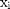 and 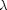
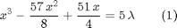
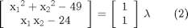
Function definitions
Two functions are utilized for the arc-length procedure:
The first function (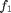, defined in the file function2.m ), needed to solve equation (1) is a cubic polynomial with the following properties:
- Function value:
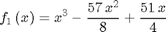
- Function jacobian (derivative):
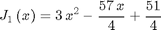
- Passes through the origin:
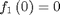
The second function (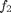, defined in the file function1.m ), needed to solve equation (2) is a nonlinear smooth function with the following properties:
- Function value:
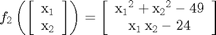
- Function jacobian:
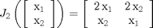
Function coding
- For function :
function [R,Q,K]=function2(t) a=t(1:end-1); lambda=t(end); f1=a^3-57/8*a^2+51/4*a; Rint=f1; Rext=lambda*5; % Out of balance force column vector (1-by-1) R=Rint-Rext; % Tangent force column vector (1-by-1) Q=5; % Jacobian matrix (1-by-1) K=3*a^2-57/4*a+51/4; end
- For function :
function [R,Q,K]=function1(t) a=t(1:end-1); lambda=t(end); f1=a(1)^2+a(2)^2-49; f2=a(1)*a(2)-24; Rint=[f1;f2]; Rext=lambda*[1;1]; % Out of balance force column vector (2-by-1) R=Rint-Rext; % Tangent force column vector (2-by-1) Q=[1;1]; % Jacobian matrix (2-by-2) K=[2*a(1), 2*a(2); a(2), a(1)]; end
Initial definitions
In the subsequent code the following initial definitions are made (in the order presented below):
- Define function
- Define function
- Set starting point (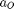) for solution of equation (1)
- Set starting point () for solution of equation (2)
- Set number of increments desired
- Set initial value of load factor (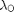) for the solution of equation (1)
- Set initial value of load factor () for the solution of equation (2)
- Set arc radius 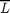 for solution of equation (1)
- Set arc radius for solution of equation (2) with the spherical-spherical arc-length method
- Set arc radius for solution of equation (2) with the ellipsoidal-ellipsoidal arc-length method
- Set maximum number of iterations permitted per increment
- Set tolerance for convergence
- Set constant controlling the distance of the centre of the constraint surface from the last known equilibrium point (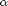) for solution of equation (1) with the elliptical-elliptical arc-length method and solution of equation (2) with the spherical-spherical arc-length method
- Set constant controlling the distance of the centre of the constraint surface from the last known equilibrium point () for solution of equation (2) with the ellipsoidal-ellipsoidal arc-length method
- Set constant controlling the shape of the ellipsoidal constraint surface (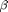)
- Set minimum value for arc radius
- Set maximum value for arc radius
- Set minimum value of partial correction 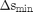
- Set step length reducing factor
functn1=@function2; %1 functn2=@function1; %2 aO1=0; %3 aO2=[4;6]; %4 ninc=10; %5 lambdaO1=0; %6 lambdaO2=1; %7 Lbar1=0.5; %8 Lbar2=1; %9 Lbar3=1.5; %10 maxit=20; %11 tol=5e-5; %12 alpha1=-0.5; %13 alpha2=0; %14 beta=1; %15 Lbarmin=0; %16 Lbarmax=1; %17 Deltasmin=0.1; %18 cutstep=0.9; %19
Applications
- Default application of the arc length control method as described by Ritto-Correa & Camotim (2008) to solve equation (1)
- Non-default application of the arc length control method as described by Ritto-Correa & Camotim (2008) to solve equation (1)
- Default application of the arc length control method as described by Ritto-Correa & Camotim (2008) to solve equation (2)
- Non-default application of the arc length control method as described by Ritto-Correa & Camotim (2008) to solve equation (2) and plot of the results
- Non-default application of the arc length control method as described by Ritto-Correa & Camotim (2008) to solve equation (2) and plot of the results
[t_out1,SP_out1,iter_out1] = arc_length(functn1,aO1); %1 Result1=[t_out1',iter_out1',SP_out1'] %1 [t_out2,SP_out2,iter_out2] = arc_length(functn1,aO1,... 'ell','ell',ninc,lambdaO1,Lbar1,maxit,tol,alpha1,beta,Lbarmin,Lbarmax,Deltasmin,cutstep); %2 Result2=[t_out2',iter_out2',SP_out2'] %2 [t_out3,SP_out3,iter_out3] = arc_length(functn2,aO2); %3 Result3=[t_out3',iter_out3',SP_out3'] %3 [t_out4,SP_out4,iter_out4] = arc_length(functn2,aO2,... 'sph','sph',ninc,lambdaO2,Lbar2,maxit,tol,alpha1,beta,Lbarmin,Lbarmax,Deltasmin,cutstep); %4 Result4=[t_out4',iter_out4',SP_out4'] %4 [t_out5,SP_out5,iter_out5] = arc_length(functn2,aO2,... 'ell','ell',ninc,lambdaO2,Lbar3,maxit,tol,alpha2,beta,Lbarmin,Lbarmax,Deltasmin,cutstep); %5 Result5=[t_out5',iter_out5',SP_out5'/10000] %5
Result1 =
0.9513 1.3084 3.0000
1.9196 1.0587 2.0000
2.6999 0.4334 2.0000
3.6214 0.0449 2.0000
4.4013 0.6709 3.0000
4.8194 1.5793 3.0000
5.1172 2.5339 2.0000
5.3553 3.5051 2.0000
5.5567 4.4846 2.0000
5.7330 5.4690 2.0000
5.8909 6.4564 2.0000
6.0345 7.4461 2.0000
6.1668 8.4373 2.0000
6.2897 9.4297 2.0000
6.4047 10.4231 2.0000
6.5131 11.4172 2.0000
6.6157 12.4119 1.0000
6.7132 13.4071 1.0000
6.8063 14.4028 1.0000
6.8953 15.3988 1.0000
Result2 =
0.2016 0.4577 2.0000 1.0000
0.4576 0.8877 2.0000 0.7973
0.7994 1.2300 2.0000 0.5938
1.2777 1.3490 2.0000 -0.2142
1.7486 1.1712 2.0000 -0.0923
2.1188 0.9080 2.0000 -0.2464
2.4295 0.6522 2.0000 -0.3158
2.7498 0.3955 4.0000 -0.3322
3.1104 0.1636 4.0000 -0.3145
3.5549 0.0417 2.0000 31.3806
Result3 =
4.2358 5.7599 0.5887 21.0000
4.0785 5.5435 0.4982 21.0000
4.0987 5.7049 0.4095 21.0000
4.2125 5.6412 0.3742 21.0000
4.1551 5.6876 0.3089 21.0000
4.0996 5.7327 0.2737 21.0000
4.0575 5.7649 0.2366 21.0000
4.0294 5.7845 0.1971 21.0000
4.0074 5.7995 0.1641 21.0000
3.9930 5.8083 0.1342 21.0000
3.9815 5.8151 0.1098 21.0000
3.9724 5.8205 0.0900 21.0000
3.9635 5.8261 0.0751 21.0000
3.9563 5.8306 0.0629 21.0000
3.9506 5.8342 0.0531 21.0000
3.9460 5.8371 0.0450 21.0000
3.9422 5.8394 0.0385 21.0000
3.9392 5.8412 0.0332 21.0000
3.9368 5.8427 0.0289 21.0000
3.9348 5.8439 0.0255 21.0000
Result4 =
4.9428 5.0553 0.9874 4.0000
5.4209 4.4310 0.0200 5.0000
5.5481 4.1575 -0.9339 2.0000
5.6292 3.9253 -1.9033 2.0000
5.6849 3.7152 -2.8794 2.0000
5.7234 3.5190 -3.8592 2.0000
5.7493 3.3324 -4.8413 2.0000
5.7651 3.1526 -5.8249 1.0000
5.7725 2.9780 -6.8095 1.0000
5.7728 2.8072 -7.7948 1.0000
Result5 =
5.0596 4.9382 0.9853 4.0000 0.0001
5.4265 4.4206 -0.0117 4.0000 0.4604
5.5751 4.0872 -1.2138 4.0000 1.0259
5.6722 3.7685 -2.6240 4.0000 1.0982
Copyright
Copyright (c) 09-Mar-2014 by George Papazafeiropoulos
- First Lieutenant, Infrastructure Engineer, Hellenic Air Force
- Civil Engineer, M.Sc., Ph.D. candidate, NTUA
- Email: gpapazafeiropoulos@yahoo.gr
- Website: http://users.ntua.gr/gpapazaf/